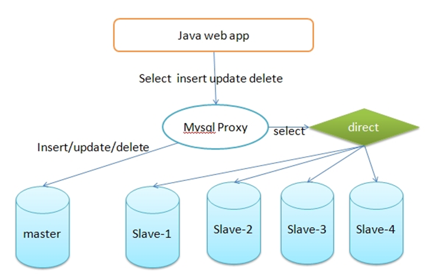
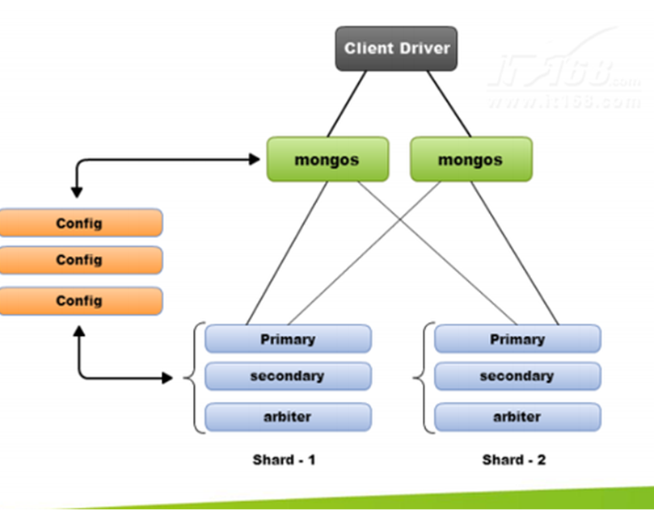
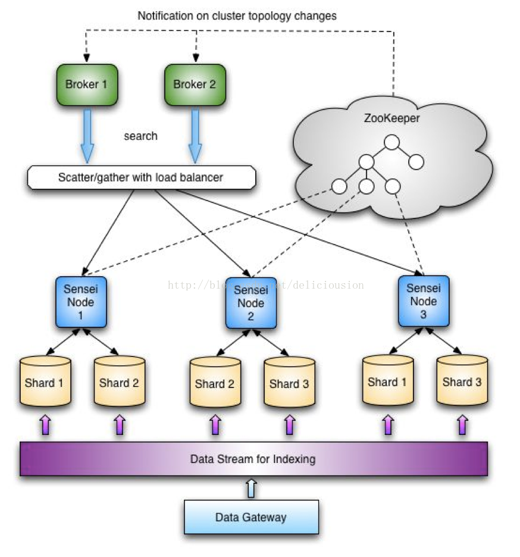
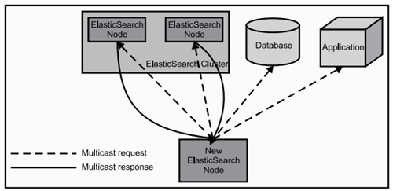
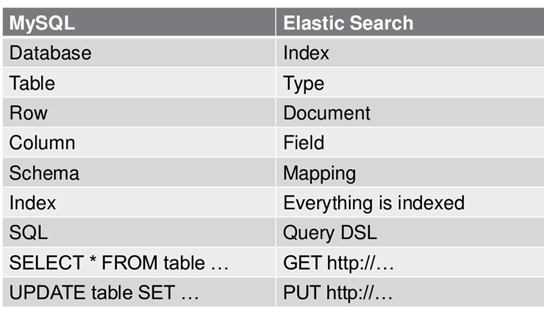

没有ES之前
思考：大规模数据如何检索？
当系统数据量上了10亿、100亿条的时候，我们在做系统架构的时候通常会从以下角度去考虑问题：
1）用什么数据库好？(mysql、sybase、oracle、达梦、神通、mongodb、hbase…)
2）如何解决单点故障；(lvs、F5、A10、Zookeeper、MQ)
3）如何保证数据安全性；(热备、冷备、异地多活)
4）如何解决检索难题；(数据库代理中间件：mysql-proxy、Cobar、MaxScale等;)
5）如何解决统计分析问题；(离线、近实时)
传统数据库的应对解决方案
对于关系型数据，我们通常采用以下或类似架构去解决查询瓶颈和写入瓶颈：
解决要点：
1）通过主从备份解决数据安全性问题；
2）通过数据库代理中间件心跳监测，解决单点故障问题；
3）通过代理中间件将查询语句分发到各个slave节点进行查询，并汇总结果

非关系型数据库的解决方案
对于Nosql数据库，以mongodb为例，其它原理类似：
解决要点：
1）通过副本备份保证数据安全性；
2）通过节点竞选机制解决单点问题；
3）先从配置库检索分片信息，然后将请求分发到各个节点，最后由路由节点合并汇总结果

另辟蹊径——完全把数据放入内存怎么样？
我们知道，完全把数据放在内存中是不可靠的，实际上也不太现实，当我们的数据达到PB级别时，按照每个节点96G内存计算，在内存完全装满的数据情况下，我们需要的机器是：1PB=1024T=1048576G
节点数=1048576/96=10922个
实际上，考虑到数据备份，节点数往往在2.5万台左右。成本巨大决定了其不现实！
从前面讨论我们了解到，把数据放在内存也好，不放在内存也好，都不能完完全全解决问题。
全部放在内存速度问题是解决了，但成本问题上来了。
为解决以上问题，从源头着手分析，通常会从以下方式来寻找方法：
1、存储数据时按有序存储；
2、将数据和索引分离；
3、压缩数据；
这就引出了Elasticsearch。
Elasticsearch的概述
Elasticsearch 是什么
Elasticsearch（ES）是一个基于Lucene构建的开源、分布式、RESTful接口的全文搜索引擎。Elasticsearch还是一个分布式文档数据库，其中每个字段均可被索引，而且每个字段的数据均可被搜索，ES能够横向扩展至数以百计的服务器存储以及处理PB级的数据。可以在极短的时间内存储、搜索和分析大量的数据。通常作为具有复杂搜索场景情况下的核心发动机。Elasticsearch也使用Java开发并使用Lucene作为其核心来实现所有索引和搜索的功能，但是它的目的是通过简单的RESTful API来隐藏Lucene的复杂性，从而让全文搜索变得简单。

ElasticSearch就是为高可用和可扩展而生的。可以通过购置性能更强的服务器或者升级硬件来完成系统扩展，称为垂直或向上扩展（Vertical Scale/Scaling Up）。另一方面，增加更多的服务器来完成系统扩展，称为水平扩展或者向外扩展（Horizontal Scale/Scaling Out）。尽管ES能够利用更强劲的硬件，垂直扩展毕竟还是有它的极限。真正的可扩展性来自于水平扩展，通过向集群中添加更多的节点来分担负载，增加可靠性。ES天生就是分布式的：它知道如何管理多个节点来完成扩展和实现高可用性。这也意味你的应用不需要做任何的改动。
Lucene与ES关系
- Lucene只是一个库。想要使用它，你必须使用Java来作为开发语言并将其直接集成到你的应用中，更糟糕的是，Lucene非常复杂，你需要深入了解检索的相关知识来理解它是如何工作的。
- Elasticsearch也使用Java开发并使用Lucene作为其核心来实现所有索引和搜索的功能，但是它的目的是通过简单的RESTful API来隐藏Lucene的复杂性，从而让全文搜索变得简单。
ES主要解决问题
1）检索相关数据；
2）返回统计结果；
3）速度要快。
ES工作原理
当ElasticSearch的节点启动后，它会利用多播(multicast)(或者单播，如果用户更改了配置)寻找集群中的其它节点，并与之建立连接。这个过程如下图所示：

ES数据架构的主要概念（与关系数据库Mysql对比）

（1）关系型数据库中的数据库（DataBase），等价于ES中的索引（Index）
（2）一个数据库下面有N张表（Table），等价于1个索引Index下面有N多类型（Type），
（3）一个数据库表（Table）下的数据由多行（ROW）多列（column，属性）组成，等价于1个Type由多个文档（Document）和多Field组成。
（4）在一个关系型数据库里面，schema定义了表、每个表的字段，还有表和字段之间的关系。 与之对应的，在ES中：Mapping定义索引下的Type的字段处理规则，即索引如何建立、索引类型、是否保存原始索引JSON文档、是否压缩原始JSON文档、是否需要分词处理、如何进行分词处理等。
（5）在数据库中的增insert、删delete、改update、查search操作等价于ES中的增PUT/POST、删Delete、改_update、查GET.
ES核心概念
Near Realtime(NRT) 几乎实时
Elasticsearch是一个几乎实时的搜索平台。意思是，从索引一个文档到这个文档可被搜索只需要一点点的延迟，这个时间一般为毫秒级。
Cluster：集群
ES可以作为一个独立的单个搜索服务器。不过，为了处理大型数据集，实现容错和高可用性，ES可以运行在许多互相合作的服务器上。这些服务器的集合称为集群。
群集是一个或多个节点（服务器）的集合， 这些节点共同保存整个数据，并在所有节点上提供联合索引和搜索功能。一个集群由一个唯一集群ID确定，并指定一个集群名（默认为“elasticsearch”）。该集群名非常重要，因为节点可以通过这个集群名加入群集，一个节点只能是群集的一部分。
确保在不同的环境中不要使用相同的群集名称，否则可能会导致连接错误的群集节点。例如，你可以使用logging-dev、logging-stage、logging-prod分别为开发、阶段产品、生产集群做记录。
Node：节点
形成集群的每个服务器称为节点。
节点是单个服务器实例，它是群集的一部分，可以存储数据，并参与群集的索引和搜索功能。就像一个集群，节点的名称默认为一个随机的通用唯一标识符（UUID），确定在启动时分配给该节点。如果不希望默认，可以定义任何节点名。这个名字对管理很重要，目的是要确定你的网络服务器对应于你的ElasticSearch群集节点。
我们可以通过群集名配置节点以连接特定的群集。默认情况下，每个节点设置加入名为“elasticSearch”的集群。这意味着如果你启动多个节点在网络上，假设他们能发现彼此都会自动形成和加入一个名为“elasticsearch”的集群。
在单个群集中，您可以拥有尽可能多的节点。此外，如果“elasticsearch”在同一个网络中，没有其他节点正在运行，从单个节点的默认情况下会形成一个新的单节点名为”elasticsearch”的集群。
Shard：分片 & Replia：副本
索引可以存储大量的数据，这些数据可能超过单个节点的硬件限制。例如，十亿个文件占用磁盘空间1TB的单指标可能不适合对单个节点的磁盘或可能太慢服务仅从单个节点的搜索请求。
为了解决这一问题，Elasticsearch提供细分你的指标分成多个块称为分片的能力。当你创建一个索引，你可以简单地定义你想要的分片数量。每个分片本身是一个全功能的、独立的“指数”，可以托管在集群中的任何节点。
Shards分片的重要性主要体现在以下两个特征：
- 分片允许您水平拆分或缩放内容的大小
- 分片允许你分配和并行操作的碎片（可能在多个节点上）从而提高性能/吞吐量
这个机制中的碎片是分布式的以及其文件汇总到搜索请求是完全由ElasticSearch管理，对用户来说是透明的。
在同一个集群网络或云环境上，故障是任何时候都会出现的，拥有一个故障转移机制以防分片和结点因为某些原因离线或消失是非常有用的，并且被强烈推荐。为此，Elasticsearch允许你创建一个或多个拷贝，你的索引分片进入所谓的副本或称作复制品的分片，简称Replicas。
Replicas的重要性主要体现在以下两个特征：
- 副本为分片或节点失败提供了高可用性。为此，需要注意的是，一个副本的分片不会分配在同一个节点作为原始的或主分片，副本是从主分片那里复制过来的。
- 副本允许用户扩展你的搜索量或吞吐量，因为搜索可以在所有副本上并行执行。
当有大量的文档时，由于内存的限制、磁盘处理能力不足、无法足够快的响应客户端的请求等，一个节点可能不够。这种情况下，数据可以分为较小的分片。每个分片放到不同的服务器上。
当你查询的索引分布在多个分片上时，ES会把查询发送给每个相关的分片，并将结果组合在一起，而应用程序并不知道分片的存在。即：这个过程对用户来说是透明的。为提高查询吞吐量或实现高可用性，可以使用分片副本。
副本是一个分片的精确复制，每个分片可以有零个或多个副本。ES中可以有许多相同的分片，其中之一被选择更改索引操作，这种特殊的分片称为主分片。
当主分片丢失时，如：该分片所在的数据不可用时，集群将副本提升为新的主分片。
全文检索
全文检索就是对一篇文章进行索引，可以根据关键字搜索，类似于mysql里的like语句。
全文索引就是把内容根据词的意义进行分词，然后分别创建索引，例如”你们的激情是因为什么事情来的” 可能会被分词成：“你们“，”激情“，“什么事情“，”来“ 等token，这样当你搜索“你们” 或者 “激情” 都会把这句搜出来。
Index索引
索引是具有相似特性的文档集合。例如，可以为客户数据提供索引，为产品目录建立另一个索引，以及为订单数据建立另一个索引。索引由名称（必须全部为小写）标识，该名称用于在对其中的文档执行索引、搜索、更新和删除操作时引用索引。在单个群集中，您可以定义尽可能多的索引。
Type类型
在索引中，可以定义一个或多个类型。类型是索引的逻辑类别/分区，其语义完全取决于您。一般来说，类型定义为具有公共字段集的文档。例如，假设你运行一个博客平台，并将所有数据存储在一个索引中。在这个索引中，您可以为用户数据定义一种类型，为博客数据定义另一种类型，以及为注释数据定义另一类型。
Document文档
文档是可以被索引的信息的基本单位。例如，您可以为单个客户提供一个文档，单个产品提供另一个文档，以及单个订单提供另一个文档。本文件的表示形式为JSON（JavaScript Object Notation）格式，这是一种非常普遍的互联网数据交换格式。
在索引/类型中，您可以存储尽可能多的文档。请注意，尽管文档物理驻留在索引中，文档实际上必须索引或分配到索引中的类型。
Elasticsearch可以做什么?
当你经营一家网上商店，你可以让你的客户搜索你卖的商品。在这种情况下，你可以使用ElasticSearch来存储你的整个产品目录和库存信息，为客户提供精准搜索，可以为客户推荐相关商品。
当你想收集日志或者交易数据的时候，需要分析和挖掘这些数据，寻找趋势，进行统计，总结，或发现异常。在这种情况下，你可以使用Logstash或者其他工具来进行收集数据，当这引起数据存储到ElasticsSearch中。你可以搜索和汇总这些数据，找到任何你感兴趣的信息。
对于程序员来说，比较有名的案例是GitHub，GitHub的搜索是基于ElasticSearch构建的，在github.com/search页面，你可以搜索项目、用户、issue、pull request，还有代码。共有40~50个索引库，分别用于索引网站需要跟踪的各种数据。虽然只索引项目的主分支（master），但这个数据量依然巨大，包括20亿个索引文档，30TB的索引文件。
ELK是什么？
ELK=elasticsearch+Logstash+kibana
elasticsearch：后台分布式存储以及全文检索
logstash: 日志加工、“搬运工”
kibana：数据可视化展示。
ELK架构为数据分布式存储、可视化查询和日志解析创建了一个功能强大的管理链。 三者相互配合，取长补短，共同完成分布式大数据处理工作。
ES特点和优势
1）分布式实时文件存储，可将每一个字段存入索引，使其可以被检索到。
2）实时分析的分布式搜索引擎。
分布式：索引分拆成多个分片，每个分片可有零个或多个副本。集群中的每个数据节点都可承载一个或多个分片，并且协调和处理各种操作；
负载再平衡和路由在大多数情况下自动完成。
3）可以扩展到上百台服务器，处理PB级别的结构化或非结构化数据。也可以运行在单台PC上（已测试）
4）支持插件机制，分词插件、同步插件、Hadoop插件、可视化插件等。